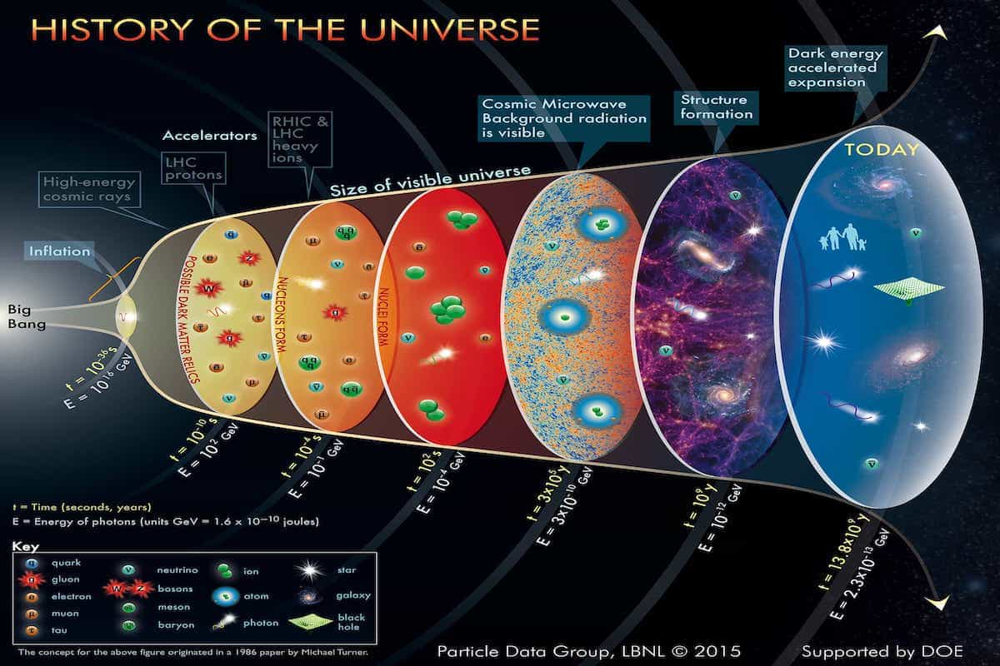

According to our modern understanding of our Universe, we have a good idea how the Universe evolved from its beginning.
Planck Epoch
()
This era is an era that cannot be explained by current physics, we know the Universe is immeasureably hot, the four forces are united, but we cannot explain this further because the physics are not developed.
Grand Unificiation Epoch (
)
In this era, energy is low enough that gravity separates from the unified forces, there is now two forces in the Universe: gravity and electrostrong interaction.
Electroweak Epoch ()
In this era, the strong nuclear force is separated from the electrostrong interaction, which is now called electroweak interaction.
Inflation Epoch
()
In this era (which is parallel to all the era mentioned above), the Universe is rapidly expanding, way faster than now, this era is proposed to explain the Universe is homogenous and isotropic in the large scale.
Electroweak epoch
()
In this era, quarks and bosons (particles that carries strong/weak nuclear force and electromagnetic force) are formed, but have not yet gained their mass through Higgs mechanism, electromagnetic force and weak nuclear force are NOT YET separated.
Electroweak symmetry breaking
()
In this era, energy of the Universe drops below a certain point that:
- Particles now gained mass through the Higgs mechanism
- Electromagnetic and weak nuclear force are separated
Now, the four fundamental forces are finally separated. But energy is still to high for particles to form protons and neutrons (they will fall apart immediately after forming)
Quark Epoch
()
In this era, quarks and bosons are formed, but they cannot form hardons (protons, neutrons, etc.) because of high energy of the Universe, right now the Universe is essentially a soup of hot quarks and bosons.
Hardon Epoch
()
-
In this era, energy of the Universe finally drops below the threshold of forming hardons, protons and neutrons as well as their anti-particles are formed in this process, for unknown reason, there are slightly more matter than anti-matter, this is called the bayronic asymmetry.
-
In this era, the Universe becomes transparent to neutrinos, meaning they can travel freely through the Universe (previously they were blocked by the immense energy of the Universe), thus creating a hypothetical Cosmic Neutrino Background, but this background is not observed yet.
Lepton Epoch
()
At the end of hardon epoch, almost all hardons and anti-hardons annihilated with each other, releasing energy, now Lepton are dominating the mass of the Universe, although the energy dropped below the thershold for forming hardons, electrons can still be formed from energy of the Universe.
Big Bang Nucleosynthesis
()
In this era, energy of Universe dropped below the threshold of ripping nuclei together, quarks and neutrons are now bound together in primodorial nuclei like hydrogen and helium. According to studies, the Universe is roughly composed of 75% hydrogen and 25% helium in this era.
Photon Epoch
()
In this era, the energy of the Universe is still to high for electrons to bound to atoms, right now the Universe is a hot soup of plasma nuclei and electrons and photons.
Recombination
()
In this era, electrons and nuclei are finally bound together, they now form the hydrogen and helium atom. After elements are formed, there are nothing to stop photons from propergating through the Universe, so they radiated outward and created the Cosmic Background Radiation (CMB).
Dark Ages
()
This is the era between the formation of elements and the birth of first star, CMB photons quickly redshifted to infrared, the Universe now have no light, in a complete darkness.
Stars and Galaxies formation and evloution
()
Galaxies and stars are formed and evolved during this period, eventually leading us to see the Universe we see now, a Universe full of wonders.
